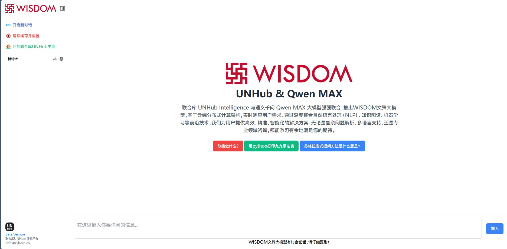

大模型
2025 年 2 月 11 日
来自阿里云Qwen MAX蒸馏训练的WINDOM文殊大模型

与通义千问Qwen联合训练
联合库 UNHub Intelligence 与通义千问 Qwen MAX 大模型强强联合，推出WISDOM文殊大模型，基于云端分布式计算架构，实时响应用户需求。通过深度整合自然语言处理（NLP）、知识图谱、机器学习等前沿技术，我们为用户提供高效、精准、智能化的解决方案，无论是复杂问题解析、多语言支持，还是专业领域咨询，都能游刃有余地满足您的期待。
0 成本训练集
通过阿里云百炼平台实现自有模型的基础高阶训练，现在使用Qwen-MAX最大模型进行训练，未来将加入推理思考集合实现类似于deepseek R1或deepseek V3模型的能力。
良好的用户交互页面
使用Tailwind CSS搭建对话页面，当前允许未经登录使用，对话内容将缓存至浏览器本部不会上传到服务器，您可以一键清除缓存并重置以保护隐私。
在线试用WISDOM文殊